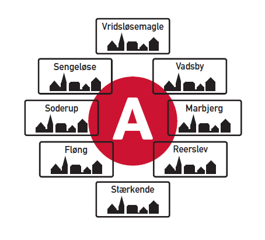

Mærkesager og information
ALLE FORTJENER EN GOD HVERDAG
Læs mere
Alle i vores kommune skal ha’ mulighed for et godt og indholdsrigt liv, fra vugge til grav.
VÆRDIG ÆLDREPLEJE & GODE SENIORLIV
Ældrepleje med værdighed og omsorg, når vi får brug for hjælp i alderdommen, skal være en selvfølge.
Vi skal sikre at ingen bliver isoleret og ensomme. Ældre skal ikke blive i eget hjem for en hver pris.
For seniorer og ældre i vores kommune skal vi sørge for, at der er de fornødne aktiviteter og hjælpeforanstaltninger.
BØRN ELLER BETON
Vi skal ikke ha' flere store boligområder. Vi skal have bedre pasningskvalitet for børnene.
ORDENTLIGE FACILITETER TIL VORES OFFENTLIGE TRANSPORT
Vi skal ha' brugervenlige busstoppesteder, også i det åbne land.
NY AFFALDSSORTERING
Vi skal ha' indført en ny og mere klimavenlig affaldsindsamling, hvor kildesorteringen hos den enkelte borger reduceres og maskinel affaldssortering indføres.
FOREBYGGELSE AF PARALLELSAMFUND
Vi skal aktivt sikre, at der ikke dannes parallelsamfund.
Dansk skal være samtalesproget, der benyttes i skolerne, på arbejdspladserne og i hjemmene.
KOMMUNALE MÆRKESAGER
Læs mere
ÆLDREPLEJE
- Ældrepleje skal være med værdighed og omsorg, med en snæver personalegruppe om borgeren
- Kapaciteten på vores plejehjem skal udbygges og der skal bygges flere ældreboliger
LANDSBYER & BYUDVIKLING
- Afsætte øremærkede puljer til byudvikling og borgernære aktiviteter i landsbyerne
SKOLER & DAGTILBUD
- Landsbyskolerne skal bevares i moderne rammer med tidssvarende It-udstyr og faglokaler
- Åbningstider i institutionerne skal tilpasses familiens behov
- Flere uddannede personaler skal skabe bedre pasningskvalitet og udvikling af børnene
GRØN OMSTILLING & AFFALD
- Grøn omstilling skal i højsædet. Der skal monteres solceller på vores offentlieg bygninger
- Vi skal ha' indført en ny og mere klimavenlig affaldsindsamling, hvor kildesorteringen hos den enkelte borger reduceres og maskinel affaldssortering indføres
ARBEJDSMARKED
- Vi skal sikre, at flest mulige af vores unge får en uddannelse, så de kan blive selvforsørgende og få en god start på voksenlivet
TRAFIK
- Nej til Ring 5. Vi skal ikke ha’ flere støjende motorveje gennem kommunen
- Vores veje skal støjdæmpes med brug af støjdæmpende asfalt og hastighedssænkning
- Den kollektive trafik skal udbygges i yderområder, og busstoppestederne i det åbne land skal forbedres
- Svage trafikanter skal beskyttes gennem udbygning af gang- og cykelstier
- Vi skal sikre at der er P-pladser nok ved vores stationer, så kollektiv transport tilvælges
DERFOR STILLER JEG OP
Læs mere
Jeg stiller op til genvalg til byrådet, da jeg med mine 16 års byrådserfaring kan gøre en forskel til gavn for borgerne i Høje-Taastrup Kommune.
Jeg vil fortsat varetage landsbyernes interesser og modarbejde at kommunens yderområder nedprioriteres.
Jeg sætter en ære i at deltage i det daglige arbejde med at gøre hverdagen så god som mulig for borgerne.
MÅLSÆTNINGER
Sikre en bæredygtig fremtid med fokus på natur, rent drikkevand og en grøn omstilling.
De kvalitetsstandarder, vi tilbyder borgerne, skal være både lovgivningsmæssigt og moralsk i orden.
Alle børn skal ha’ mulighed for at gå i en god kommunal skole i deres nærområde.
Gode daginstitutioner, SFO’er, klubber og skoler, der kan give alle børn og unge et godt afsæt i livet.
Der skal være sikre skoleveje og gode stisystemer til de bløde trafikanter.
Den kollektive transport skal være grøn, velfungerende og rationel til gavn for både borgere og miljø.
STEM PERSONLIGT
Læs mere
Jeg er opvokset i Vridsløsemagle og gået i skole i Sengeløse, gift med ungdomskæresten Judy, og vi har 4 voksne børn.
Opvækst i Sengeløse området, har givet mig en værdifuld indsigt i lokalområdets kvaliteter og udfordringer, som jeg benytter i mit politiske arbejde.
Vi bor i den gamle smedje på Landsbygaden 31 i Sengeløse.
Familien har altid været mit faste anker. Børnene er nu flyttet fra reden og stiftet egne familier.
Det gir’ mig overskud til både at arbejde som Faglig Konsulent i Fagforening FOA, og samtidigt være indvalgt i Høje-Taastrup Byråd.
Jeg er fremsynet og initiativrig og sætter borgerne i centrum. Jeg har respekt for demokratiet og udviser ansvarlighed for økonomien.
CV - UDDANNELSE
- Realeksamen fra Selsmoseskolen i Taastrup
- HF enkeltfag Hindegade Skole i København
- Jernbanearbejder ved DSB i Taastrup
- Rutebus Chauffør i København
- Brandmand og ambulanceredder med 33 års ansættelse ved Falck i Taastrup
- Brancheformand og Fællestillidsmand for redderne i Storkøbenhavn
- Faglig konsulent i Fagforeningen FOA
- 2009 indvalgt i Høje-Taastrup Kommunes Byråd